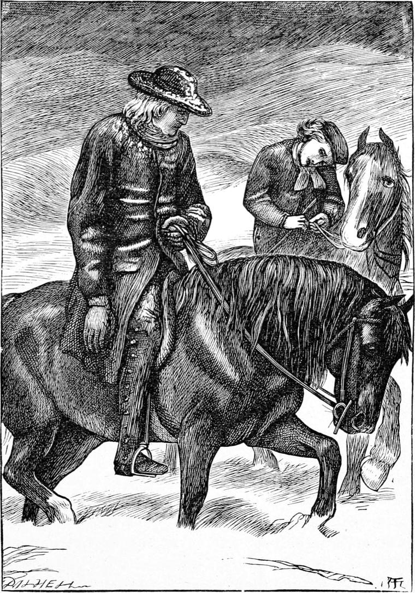

In this winter, the stormiest I can recollect, occurred the chief adventure of my boyhood—indeed, the event most worthy to be called an adventure I have ever encountered.
There had been a tremendous fall of snow, which a furious wind, lasting two days and the night between, had drifted into great mounds, so that the shape of the country was much altered with new heights and hollows. Even those who were best acquainted with them could only guess at the direction of some of the roads, and it was the easiest thing in the world to lose the right track, even in broad daylight. As soon as the storm was over, however, and the frost was found likely to continue, they had begun to cut passages through some of the deeper wreaths, as they called the snow-mounds; while over the tops of others, and along the general line of the more frequented roads, footpaths were soon trodden. It was many days, however, before vehicles could pass, and coach-communication be resumed between the towns. All the short day, the sun, though low, was brilliant, and the whole country shone with dazzling whiteness; but after sunset, which took place between three and four o’clock, anything more dreary can hardly be imagined, especially when the keenest of winds rushed in gusts from the north-east, and lifting the snow-powder from untrodden shadows, blew it, like so many stings, in the face of the freezing traveller.
Early one afternoon, just as I came home from school, which in winter was always over at three o’clock, my father received a message that a certain laird, or squire as he would be called in England—whose house lay three or four miles off amongst the hills, was at the point of death, and very anxious to see him: a groom on horseback had brought the message. The old man had led a life of indifferent repute, and that probably made him the more anxious to see my father, who proceeded at once to get ready for the uninviting journey.
Since my brother Tom’s departure, I had become yet more of a companion to my father; and now when I saw him preparing to set out, I begged to be allowed to go with him. His little black mare had a daughter, not unused to the saddle. She was almost twice her mother’s size, and none the less clumsy that she was chiefly employed upon the farm. Still she had a touch of the roadster in her, and if not capable of elegant motion, could get over the ground well enough, with a sort of speedy slouch, while, as was of far more consequence on an expedition like the present, she was of great strength, and could go through the wreaths, Andrew said, like a red-hot iron. My father hesitated, looked out at the sky, and hesitated still.
“I hardly know what to say, Ranald. If I were sure of the weather—but I am very doubtful. However, if it should break up, we can stay there all night. Yes.—Here, Allister; run and tell Andrew to saddle both the mares, and bring them down directly.—Make haste with your dinner, Ranald.”
Delighted at the prospect, I did make haste; the meal was soon over, and Kirsty expended her utmost care in clothing me for the journey, which would certainly be a much longer one in regard of time than of space. In half an hour we were all mounted and on our way—the groom, who had so lately traversed the road, a few yards in front.
I have already said, perhaps more than once, that my father took comparatively little notice of us as children, beyond teaching us of a Sunday, and sometimes of a week-evening in winter, generally after we were in bed. He rarely fondled us, or did anything to supply in that manner the loss of our mother. I believe his thoughts were tenderness itself towards us, but they did not show themselves in ordinary shape: some connecting link was absent. It seems to me now sometimes, that perhaps he was wisely retentive of his feelings, and waited a better time to let them flow. For, ever as we grew older, we drew nearer to my father, or, more properly, my father drew us nearer to him, dropping, by degrees, that reticence which, perhaps, too many parents of character keep up until their children are full grown; and by this time he would converse with me most freely. I presume he had found, or believed he had found me trustworthy, and incapable of repeating unwisely any remarks he made. But much as he hated certain kinds of gossip, he believed that indifference to your neighbour and his affairs was worse. He said everything depended on the spirit in which men spoke of each other; that much of what was called gossip was only a natural love of biography, and, if kindly, was better than blameless; that the greater part of it was objectionable, simply because it was not loving, only curious; while a portion was amongst the wickedest things on earth, because it had for its object to believe and make others believe the worst. I mention these opinions of my father, lest anyone should misjudge the fact of his talking to me as he did.
Our horses made very slow progress. It was almost nowhere possible to trot, and we had to plod on, step by step. This made it more easy to converse.
“The country looks dreary, doesn’t it, Ranald?” he said.
“Just like as if everything was dead, father,” I replied.
“If the sun were to cease shining altogether, what do you think would happen?”
I thought a bit, but was not prepared to answer, when my father spoke again.
“What makes the seeds grow, Ranald—the oats, and the wheat, and the barley?”
“The rain, father,” I said, with half-knowledge.
“Well, if there were no sun, the vapours would not rise to make clouds. What rain there was already in the sky would come down in snow or lumps of ice. The earth would grow colder and colder, and harder and harder, until at last it went sweeping through the air, one frozen mass, as hard as stone, without a green leaf or a living creature upon it.”
“How dreadful to think of, father!” I said. “That would be frightful.”
“Yes, my boy. It is the sun that is the life of the world. Not only does he make the rain rise to fall on the seeds in the earth, but even that would be useless, if he did not make them warm as well—and do something else to them besides which we cannot understand. Farther down into the earth than any of the rays of light can reach, he sends other rays we cannot see, which go searching about in it, like long fingers; and wherever they find and touch a seed, the life that is in that seed begins to talk to itself, as it were, and straightway begins to grow. Out of the dark earth he thus brings all the lovely green things of the spring, and clothes the world with beauty, and sets the waters running, and the birds singing, and the lambs bleating, and the children gathering daisies and butter-cups, and the gladness overflowing in all hearts—very different from what we see now—isn’t it, Ranald?”

“Yes, father; a body can hardly believe, to look at it now, that the world will ever be like that again.”
“But, for as cold and wretched as it looks, the sun has not forsaken it. He has only drawn away from it a little, for good reasons, one of which is that we may learn that we cannot do without him. If he were to go, not one breath more could one of us draw. Horses and men, we should drop down frozen lumps, as hard as stones. Who is the sun’s father, Ranald?”
“He hasn’t got a father,” I replied, hoping for some answer as to a riddle.
“Yes, he has, Ranald: I can prove that. You remember whom the apostle James calls the Father of Lights?”
“Oh yes, of course, father. But doesn’t that mean another kind of lights?”
“Yes. But they couldn’t be called lights if they were not like the sun. All kinds of lights must come from the Father of Lights. Now the Father of the sun must be like the sun, and, indeed of all material things, the sun is likest to God. We pray to God to shine upon us and give us light. If God did not shine into our hearts, they would be dead lumps of cold. We shouldn’t care for anything whatever.”
“Then, father, God never stops shining upon us. He wouldn’t be like the sun if he did. For even in winter the sun shines enough to keep us alive.”
“True, my boy. I am very glad you understand me. In all my experience I have never yet known a man in whose heart I could not find proofs of the shining of the great Sun. It might be a very feeble wintry shine, but still he was there. For a human heart though, it is very dreadful to have a cold, white winter like this inside it, instead of a summer of colour and warmth and light. There’s the poor old man we are going to see. They talk of the winter of age: that’s all very well, but the heart is not made for winter. A man may have the snow on his roof, and merry children about his hearth; he may have grey hairs on his head, and the very gladness of summer in his bosom. But this old man, I am afraid, feels wintry cold within.”
“Then why doesn’t the Father of Lights shine more on him and make him warmer?”
“The sun is shining as much on the earth in the winter as in the summer: why is the earth no warmer?”
“Because,” I answered, calling up what little astronomy I knew, “that part of it is turned away from the sun.”
“Just so. Then if a man turns himself away from the Father of Lights—the great Sun—how can he be warmed?”
“But the earth can’t help it, father.”
“But the man can, Ranald. He feels the cold, and he knows he can turn to the light. Even this poor old man knows it now. God is shining on him—a wintry way—or he would not feel the cold at all; he would be only a lump of ice, a part of the very winter itself. The good of what warmth God gives him is, that he feels cold. If he were all cold, he couldn’t feel cold.”
“Does he want to turn to the Sun, then, father?”
“I do not know. I only know that he is miserable because he has not turned to the Sun.”
“What will you say to him, father?”
“I cannot tell, my boy. It depends on what I find him thinking. Of all things, my boy, keep your face to the Sun. You can’t shine of yourself, you can’t be good of yourself, but God has made you able to turn to the Sun whence all goodness and all shining comes. God’s children may be very naughty, but they must be able to turn towards him. The Father of Lights is the Father of every weakest little baby of a good thought in us, as well as of the highest devotion of martyrdom. If you turn your face to the Sun, my boy, your soul will, when you come to die, feel like an autumn, with the golden fruits of the earth hanging in rich clusters ready to be gathered—not like a winter. You may feel ever so worn, but you will not feel withered. You will die in peace, hoping for the spring—and such a spring!”
Thus talking, in the course of two hours or so we arrived at the dwelling of the old laird.